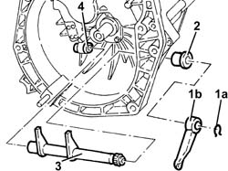
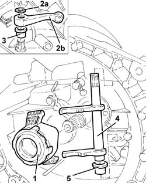

1820A26 THRUST BEARING LINKAGE - R + R WITH GEARBOX REMOVED
- Path
- Procedures > 18 CLUTCH UNIT > 1820 CLUTCH RELEASE CONTROLS > 1820A CLUTCH RELEASE MECHANICAL CONTROL > 1820A26 THRUST BEARING LINKAGE - R + R WITH GEARBOX REMOVED
- Kind
- repair procedure (removal / refitting; the operation number is the code)
- Applies to
- engines: 2.0 JTS, 3.2 V6, 1.9 JTD 16V; all production periods
- Interactive page
- https://sloeber94.github.io/elrnDB-aGt/en/#/125001221
Applies to: engines: 3.2 V6; all production periods
 Removing
Removing
 Refitting
Refitting1. Remove the circlip (1a) and the lever (1b).
2. Remove the outer non-slip bush.
3. Remove the thrust control linkage.
4. Remove the inner non-slip bush.

Applies to: engines: 3.2 V6; all production periods
Refitting
RemovingPlace the inner non-slip bush back in its housing.
Place the thrust control linkage back in its housing.
Place the outer non-slip bush back in its housing.
Place the lever back in its housing and secure it using the circlip.
Applies to: engines: 1.9 JTD 16V; all production periods
Removing
Refitting1. Remove the circlip (1a) and the lever (1b).
2. Remove the outer non-slip bush.
3. Remove the thrust control linkage.
4. Remove the inner non-slip bush.
Applies to: engines: 1.9 JTD 16V; all production periods
Refitting
RemovingPlace the inner non-slip bush back in its housing.
Place the thrust control linkage back in its housing.
Place the outer non-slip bush back in its housing.
Place the lever back in its housing and secure it using the circlip.
Applies to: engines: 2.0 JTS; all production periods
Removing
Refitting- Remove the thrust bearing.
- Remove the circlip (2a) and the lever (2b).
- Remove the outer non-slip bush.
- Remove the thrust control linkage.
- Remove the inner non-slip bush.

Applies to: engines: 2.0 JTS; all production periods
Refitting
Removing- Place the inner non-slip bush back in its housing.
- Place the thrust control linkage back in its housing.
- Place the outer non-slip bush back in its housing.
- Place the lever back in its housing and secure it using the circlip.
- Place the thrust bearing back in its housing.